screenshot_0 · full
[1920, 944] → [1920, 944] · 保留像素 100.0% · 场景 0
原图与选区

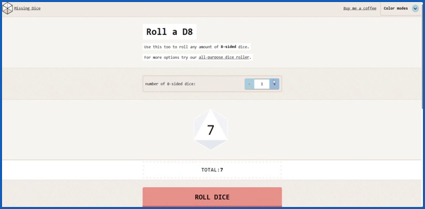
算法输出预览

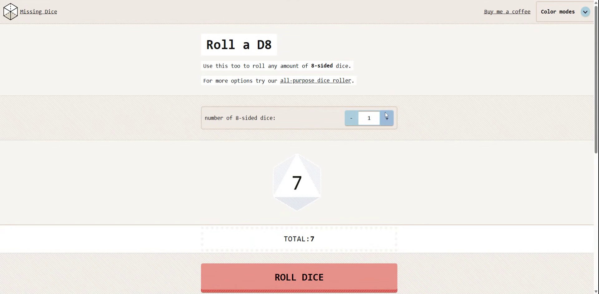
坐标：[0, 0, 1920, 944] · 原因：first_screenshot
算法版本：experimental_theme_aware_per_step_v2。仅用于预览，生成流程未修改。
返回任务总览 · 查看全部步骤拼图 · 查看算法判断 JSON
左侧为原图预览和选区（绿色：裁剪；蓝色：保留整图），右侧为此算法的输出预览；实验版尚未用于生成。点击图片查看原尺寸；预览自动缩放。像素减少比例不等于 token 减少比例。
[1920, 944] → [1920, 944] · 保留像素 100.0% · 场景 0
原图与选区

算法输出预览

坐标：[0, 0, 1920, 944] · 原因：first_screenshot
[1920, 944] → [688, 134] · 保留像素 5.1% · 场景 0
原图与选区
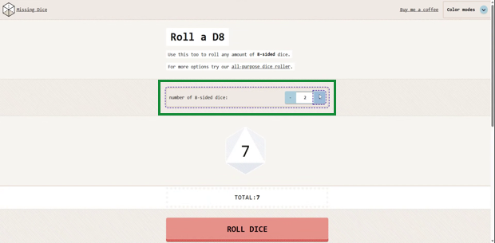
算法输出预览
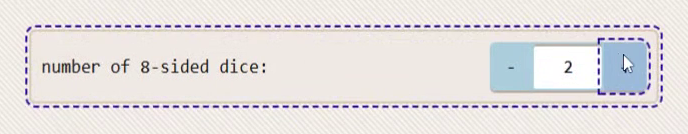
坐标：[615, 312, 1303, 446] · 原因：localized_change
[1920, 944] → [57, 58] · 保留像素 0.2% · 场景 0
原图与选区
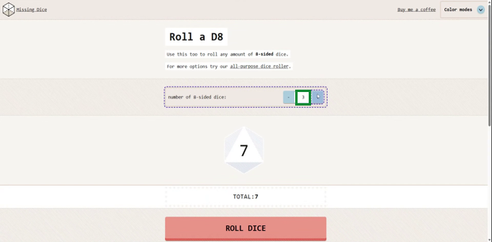
算法输出预览
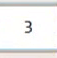
坐标：[1155, 352, 1212, 410] · 原因：localized_change
[1920, 944] → [58, 62] · 保留像素 0.2% · 场景 0
原图与选区
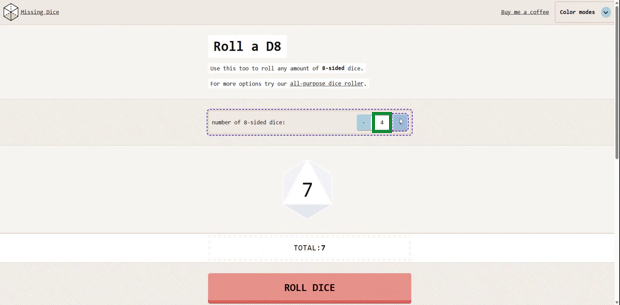
算法输出预览
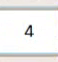
坐标：[1154, 348, 1212, 410] · 原因：localized_change
[1920, 944] → [790, 632] · 保留像素 27.5% · 场景 0
原图与选区
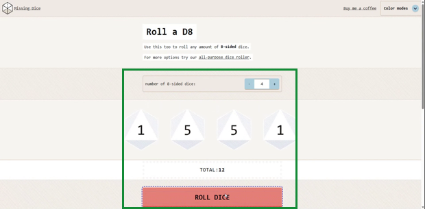
算法输出预览
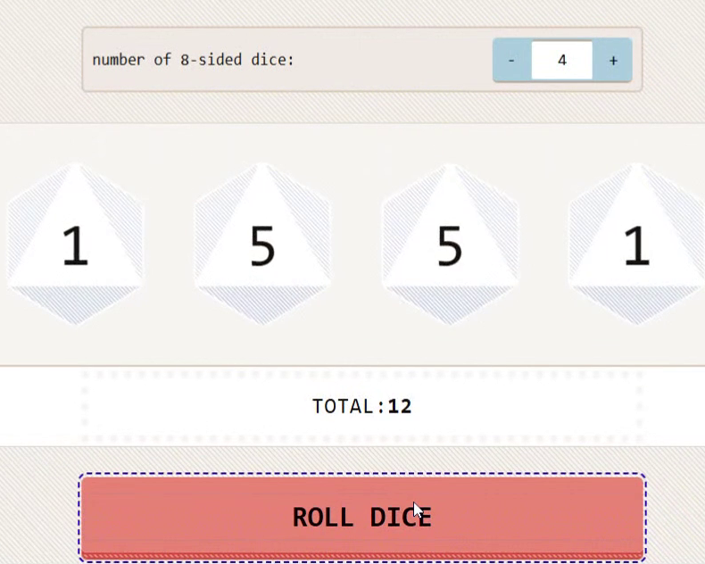
坐标：[553, 312, 1343, 944] · 原因：localized_change
[1920, 944] → [758, 271] · 保留像素 11.3% · 场景 0
原图与选区
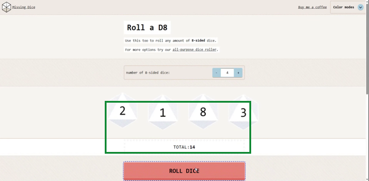
算法输出预览
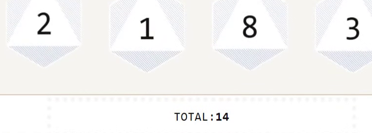
坐标：[548, 529, 1306, 800] · 原因：localized_change
[1920, 944] → [758, 389] · 保留像素 16.3% · 场景 0
原图与选区
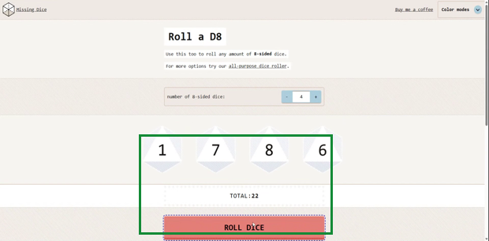
算法输出预览
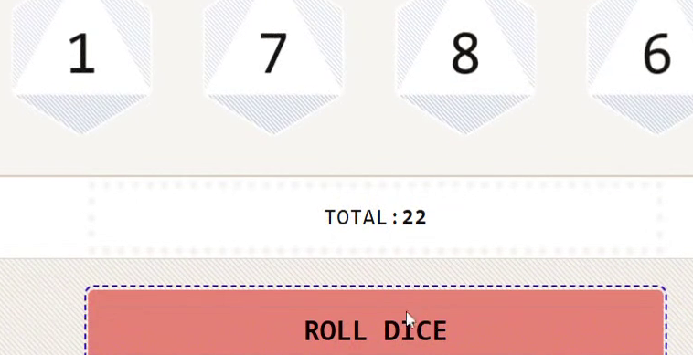
坐标：[548, 529, 1306, 918] · 原因：localized_change